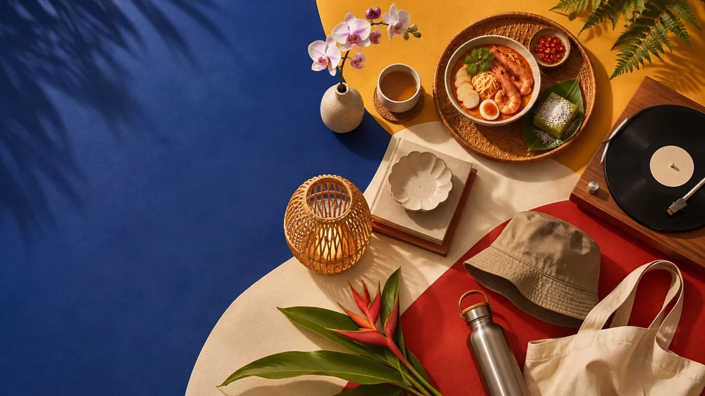

New Moon
From abalone to soups and sauces, a familiar name at the table.
SINGAPORE ROOTS. EVERYDAY REACH.
Distinct brands. Everyday essentials. One company bringing them together.
Meet the portfolio
FOOD, MUSIC AND HOME / AI ILLUSTRATION
01 / A PORTFOLIO WITH PERSONALITY
Each brand has a story and a role in the moments that make up a day. Here are three from the GJH portfolio.
From abalone to soups and sauces, a familiar name at the table.
Canned vegetables, fruits, meats and seafood for everyday meals.

Drinks and Potong ice cream, for a little everyday refreshment.

Official-site photography. Each brand retains its own identity.
02 / A STORY THAT KEEPS GROWING
Goh Joo Hin began as a provision store in Singapore in the 1940s. Its business now connects food, lifestyle and healthcare products with customers across the region.
Read the official story ↗
THEN / ROCHOR ROAD, SINGAPORE
OFFICIAL-SITE HISTORICAL
COMPOSITE
03 / LET'S TALK
Interested in a product or partnership? Reach the GJH team through their official contact page.
Contact GJH ↗